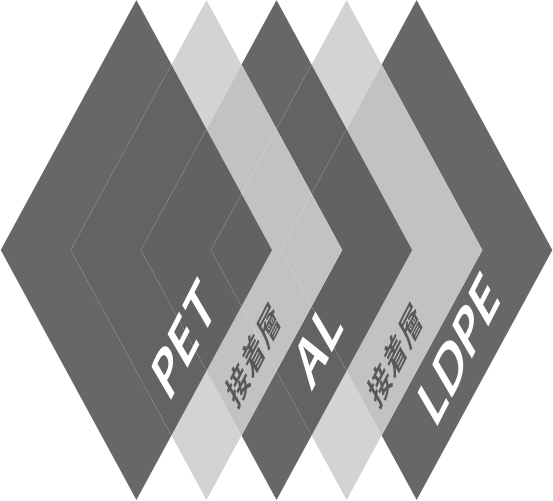
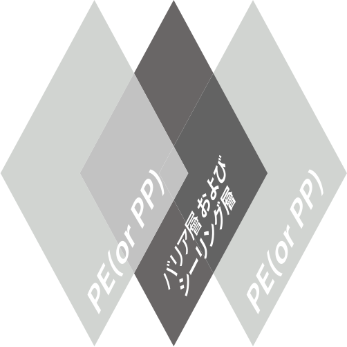

UNI-MATERIAL::ユニ素材
- 従来のコーヒー包装材は、多くの場合ほとんど多層構造(PET/AL/LDPE)の複合素材なのででリサイクルが困難なため、消却・埋立処理されています。
- ソフトパック㈱は、従来の多層複合素材の包装材をユニ素材に変更し、製品のリサイクル性を向上させ、エコに貢献しています。
製品情報見本
- 
- 従来のプラスチック包装材
- (5層の複合材質)
- 
- ユニ素材包装材
- (単一材質95%、遮断及びシーリング層5%)
- 95%以上のPEユニ素材と5%の遮断層で構成され、リサイクルしやすいが簡単な製品です。
- パッケージの生産から廃棄まで、全過程で炭素発生量とエネルギー使用量を低減させるエコパッケージです。
- 使用済みの包装材によって発生する廃棄物を低減させ、リサイクル効率を高めるためのAL FREE 製品です。
- 非常に極めて薄い遮断コーティングによりをして、コーヒーの味と香りを守るだけでなく、包装によって発生する炭素発生量とエネルギー使用量を削減できます。特に、柔らかい紙と砂のような感じの質感によりを通じソフトパックならではの環境に配慮したデザインを提供します。